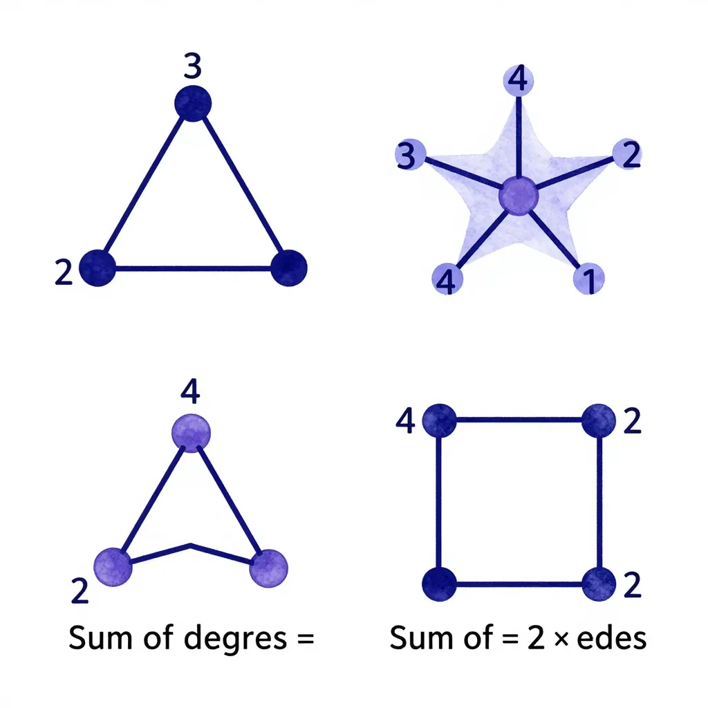
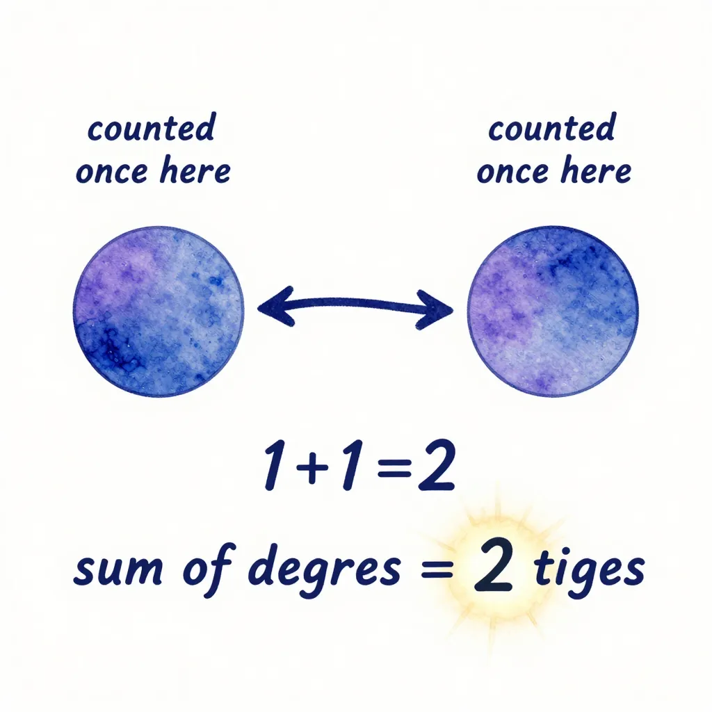

3 Chapitre 3 : La loi universelle des degrés
3.1 Un résultat qui ne fait pas d’exception
Les deux premiers chapitres nous ont montré que les degrés — le nombre de connexions de chaque sommet — recèlent une puissance insoupçonnée. Chez les Bourbaki, la séquence de degrés déterminait la structure entière du graphe. Dans l’assemblée, le principe des tiroirs forçait une collision entre degrés.
Mais ces résultats dépendaient de conditions particulières : chez Bourbaki, les réponses devaient être toutes différentes ; dans l’assemblée, on exploitait l’incompatibilité entre le degré 0 et le degré n − 1.
Existe-t-il une propriété des degrés qui soit vraie toujours — pour n’importe quel graphe, quelle que soit sa forme, sa taille, son nombre de connexions ? Un théorème sans condition, sans hypothèse, sans exception ?
Oui. Et il tient en une ligne.
3.2 Le théorème
Prenez n’importe quel graphe. Additionnez les degrés de tous ses sommets. Vous obtiendrez toujours exactement le double du nombre d’arêtes.
En notation mathématique :
\[\sum_{v} d(v) = 2 \times |E|\]
où la somme porte sur tous les sommets v du graphe, et |E| désigne le nombre d’arêtes.
Dans tout graphe, la somme des degrés de tous les sommets est égale au double du nombre d’arêtes.
Ce résultat porte le nom de lemme des poignées de main (handshaking lemma en anglais) — car si chaque arête est une poignée de main, chaque poignée implique deux personnes, et chacune la compte dans son total.
Il n’y a aucune condition : le graphe peut être connexe ou non, régulier ou irrégulier, avec 3 sommets ou 3 milliards. La propriété tient toujours.
C’est remarquable. En mathématiques, les résultats universels sont rares. La plupart des théorèmes commencent par « Si le graphe est connexe… », « Si les degrés vérifient… », « Si le graphe est planaire… ». Celui-ci ne demande rien. Il est vrai par la seule vertu de la définition de ce qu’est un graphe.
3.3 L’intuition : le double comptage
Pourquoi cette propriété est-elle vraie ? L’argument est d’une simplicité désarmante.
Prenons une arête quelconque — disons celle qui relie le sommet u au sommet v. Cette arête contribue 1 au degré de u, et 1 au degré de v. Elle est donc comptée deux fois dans la somme des degrés — une fois par chaque extrémité.
Puisque chaque arête est comptée exactement deux fois, la somme totale des degrés vaut exactement deux fois le nombre d’arêtes.
Imaginez un groupe d’amis. Chaque appel téléphonique implique exactement deux personnes. Si vous demandez à chacun « Combien d’appels avez-vous passés aujourd’hui ? » et que vous additionnez toutes les réponses, vous compterez chaque appel deux fois — une fois du côté de l’appelant, une fois du côté de l’appelé.
Si le total des réponses est 42, il y a eu exactement 21 appels. Toujours. Sans exception. Peu importe qui a appelé qui, ni combien de personnes étaient dans le groupe.
C’est le double comptage — une technique qui consiste à compter la même chose de deux façons différentes. L’égalité qui en résulte est indestructible, car elle ne repose sur aucune hypothèse.
C’est ce qu’on appelle en combinatoire le double comptage (double counting). On compte la même quantité — le nombre total de « bouts d’arêtes » — de deux façons :
- Par les sommets : chaque sommet contribue autant de bouts d’arêtes que son degré → total = somme des degrés
- Par les arêtes : chaque arête a exactement 2 bouts → total = 2 × nombre d’arêtes
Les deux comptes portent sur la même chose, donc ils sont égaux. Point final.
3.4 Vérifions sur des exemples
Rien ne vaut quelques exemples concrets pour se convaincre.

Le triangle (3 sommets, 3 arêtes) :
Chaque sommet a degré 2. Somme des degrés = 2 + 2 + 2 = 6. Nombre d’arêtes = 3. Et bien : 6 = 2 × 3. ✓
L’étoile (1 centre + 4 branches, donc 5 sommets, 4 arêtes) :
Le centre a degré 4, chaque branche a degré 1. Somme des degrés = 4 + 1 + 1 + 1 + 1 = 8. Nombre d’arêtes = 4. Et bien : 8 = 2 × 4. ✓
Le carré (4 sommets, 4 arêtes) :
Chaque sommet a degré 2. Somme des degrés = 2 + 2 + 2 + 2 = 8. Nombre d’arêtes = 4. Et bien : 8 = 2 × 4. ✓
Un graphe déconnecté (un triangle + un sommet isolé, donc 4 sommets, 3 arêtes) :
Degrés : 2, 2, 2, 0. Somme = 6. Arêtes = 3. Et bien : 6 = 2 × 3. ✓
Même le sommet isolé ne perturbe rien — son degré 0 n’ajoute rien à la somme. La propriété ne demande pas que le graphe soit connexe.
3.5 Le corollaire de parité
Le théorème a une conséquence immédiate, qui est peut-être encore plus surprenante que le résultat lui-même.
Puisque la somme des degrés vaut 2 × |E|, cette somme est toujours paire — quel que soit le graphe.
Or, que se passe-t-il quand on additionne des nombres ? Si on mélange des nombres pairs et impairs, la somme n’est paire que si le nombre de termes impairs est lui-même pair. (Vérifiez : 3 + 5 = 8, pair ; 3 + 5 + 7 = 15, impair.)
Conclusion :
Dans tout graphe, le nombre de sommets de degré impair est pair.
Autrement dit : il est impossible d’avoir un nombre impair de sommets avec un degré impair. Si trois personnes dans une salle ont chacune serré un nombre impair de mains, alors une quatrième personne (au moins) a aussi serré un nombre impair de mains.
Ce résultat ne fait aucune hypothèse sur le graphe. Il est vrai partout, toujours, sans exception.
Ce corollaire semble anodin. Mais il va se révéler décisif au chapitre suivant, quand nous chercherons à traverser les ponts de Königsberg. Euler montrera que l’existence d’un chemin traversant toutes les arêtes exactement une fois dépend précisément de la parité des degrés — et c’est le corollaire de parité qui limitera les configurations possibles.
3.6 Pourquoi c’est universel
Arrêtons-nous un instant pour comprendre ce qui rend cette propriété si extraordinairement robuste.
La plupart des théorèmes en théorie des graphes reposent sur des propriétés structurelles : le graphe doit être connexe, planaire, biparti, k-régulier… Ces conditions sélectionnent une sous-famille de graphes, et le théorème ne s’applique qu’à cette sous-famille.
Le lemme des poignées de main ne repose sur rien de tel. Il ne demande pas que le graphe soit connexe. Il ne demande pas qu’il soit fini (l’argument fonctionne même pour les graphes localement finis). Il ne demande pas que les degrés vérifient une condition particulière.
Le lemme des poignées de main est universel parce qu’il ne repose que sur la définition même d’un graphe :
- Un graphe est un ensemble de sommets et un ensemble d’arêtes
- Chaque arête relie exactement deux sommets
- Le degré d’un sommet est le nombre d’arêtes qui le touchent
L’argument de double comptage n’utilise rien d’autre. Il ne fait aucune hypothèse supplémentaire. C’est pourquoi il est indestructible — pour le réfuter, il faudrait changer la définition même de ce qu’est un graphe.
En mathématiques, les résultats les plus puissants sont souvent ceux qui demandent le moins.

3.7 Ce que nous avons appris
| Concept | Ce qu’il faut retenir |
|---|---|
| Somme des degrés = 2 × arêtes | Le lemme des poignées de main — vrai pour tout graphe, sans exception |
| Le double comptage | Compter la même chose de deux façons donne une égalité indestructible |
| Le corollaire de parité | Le nombre de sommets de degré impair est toujours pair |
| L’universalité | Le résultat ne repose que sur la définition de graphe — aucune hypothèse structurelle nécessaire |
3.8 Vers les ponts de Königsberg
Nous avons maintenant trois outils puissants dans notre boîte à outils : les séquences de degrés (chapitre 1), le principe des tiroirs (chapitre 2), et la propriété de la somme des degrés avec son corollaire de parité (ce chapitre). Trois résultats, trois niveaux de généralité — et les trois tournent autour de la même notion : le degré.
Il est temps de mettre ces outils à l’épreuve. En 1736, les habitants de Königsberg — une ville prussienne traversée par la rivière Pregel et parsemée d’îles reliées par sept ponts — se posaient une question : peut-on se promener en traversant chaque pont exactement une fois, sans jamais repasser par le même ?
Leonhard Euler va montrer que la réponse est non — et que la raison tient précisément à la parité des degrés. Le corollaire que nous venons de démontrer va devenir la clé de voûte de son raisonnement, et donner naissance, au passage, à une discipline mathématique entière.